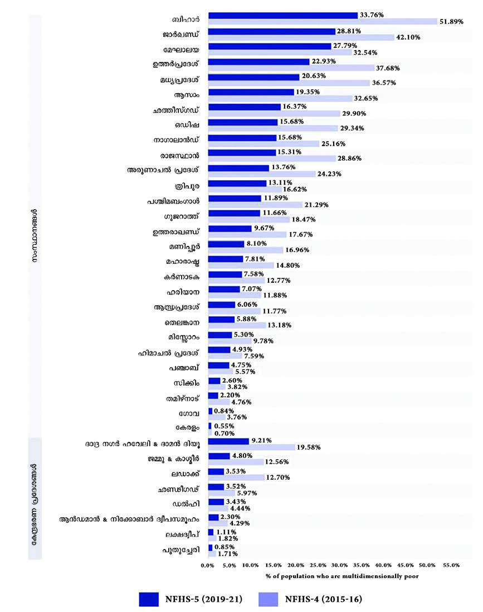
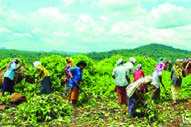
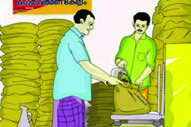

<!DOCTYPE html>
<html lang="ml">
<head>
  <meta charset="utf-8">
  <meta name="viewport" content="width=device-width, initial-scale=1.0">
  <title>Pages 101-112 - Class 7 Social science</title>
  <style>

:root {
  --bg-color: #fcfcfd;
  --card-bg: #ffffff;
  --text-color: #1e293b;
  --text-muted: #64748b;
  --primary-color: #0284c7;
  --primary-light: #e0f2fe;
  --border-color: #e2e8f0;
  --radius: 10px;
  --shadow: 0 4px 6px -1px rgb(0 0 0 / 0.05), 0 2px 4px -2px rgb(0 0 0 / 0.05);
}

body {
  font-family: -apple-system, BlinkMacSystemFont, "Segoe UI", Roboto, "Noto Sans Malayalam", "Manjari", "Gayathri", sans-serif;
  background-color: var(--bg-color);
  color: var(--text-color);
  line-height: 1.8;
  font-size: 1.1rem;
  margin: 0;
  padding: 0;
}

.container {
  max-width: 860px;
  margin: 0 auto;
  padding: 2.5rem 1.5rem 5rem 1.5rem;
}

header {
  margin-bottom: 2.5rem;
  padding-bottom: 1.5rem;
  border-bottom: 2px solid var(--border-color);
}

.badge-row {
  display: flex;
  gap: 0.5rem;
  margin-bottom: 0.75rem;
  flex-wrap: wrap;
}

.badge {
  display: inline-block;
  font-size: 0.75rem;
  font-weight: 700;
  text-transform: uppercase;
  letter-spacing: 0.05em;
  padding: 0.25rem 0.65rem;
  border-radius: 9999px;
  background: var(--primary-light);
  color: var(--primary-color);
}

.badge-medium {
  background: #fef3c7;
  color: #b45309;
}

.badge-class {
  background: #dcfce7;
  color: #15803d;
}

h1 {
  font-size: 2.1rem;
  font-weight: 800;
  margin: 0.5rem 0 1rem 0;
  line-height: 1.3;
  color: #0f172a;
}

.nav-bar {
  display: flex;
  justify-content: space-between;
  margin: 1.5rem 0;
  font-size: 0.95rem;
  flex-wrap: wrap;
  gap: 0.5rem;
}

.nav-bar a {
  color: var(--primary-color);
  text-decoration: none;
  font-weight: 600;
  padding: 0.5rem 1rem;
  border-radius: var(--radius);
  background: var(--card-bg);
  border: 1px solid var(--border-color);
  transition: all 0.2s ease;
}

.nav-bar a:hover {
  background: var(--primary-light);
  border-color: var(--primary-color);
}

.nav-bar .disabled {
  color: var(--text-muted);
  pointer-events: none;
  border-color: transparent;
  background: transparent;
}

.page-section {
  background: var(--card-bg);
  border: 1px solid var(--border-color);
  border-radius: var(--radius);
  box-shadow: var(--shadow);
  padding: 2rem;
  margin-bottom: 2.5rem;
}

.page-header {
  display: flex;
  align-items: center;
  justify-content: space-between;
  margin-bottom: 1.25rem;
  padding-bottom: 0.5rem;
  border-bottom: 1px dashed var(--border-color);
}

.page-number {
  font-size: 0.8rem;
  font-weight: 700;
  text-transform: uppercase;
  color: var(--text-muted);
  letter-spacing: 0.05em;
}

.page-content p {
  margin: 0 0 1.25rem 0;
  white-space: pre-wrap;
  word-break: break-word;
}

.page-content p:last-child {
  margin-bottom: 0;
}

.diagram-card {
  margin: 2rem 0;
  text-align: center;
  background: #f8fafc;
  border: 1px solid var(--border-color);
  border-radius: var(--radius);
  padding: 1rem;
  overflow: hidden;
}

.diagram-card img {
  max-width: 100%;
  height: auto;
  border-radius: calc(var(--radius) - 4px);
  display: inline-block;
  box-shadow: 0 2px 4px rgba(0,0,0,0.04);
}

.diagram-card figcaption {
  font-size: 0.85rem;
  color: var(--text-muted);
  margin-top: 0.75rem;
  font-weight: 500;
}

footer {
  margin-top: 3rem;
  padding-top: 2rem;
  border-top: 2px solid var(--border-color);
}

  </style>
</head>
<body>
  <div class="container">
    <header>
      <div class="badge-row">
        <span class="badge badge-class">Class 7</span>
        <span class="badge badge-medium">Malayalam Medium</span>
        <span class="badge">Social science</span>
        <span class="badge">Part 1</span>
      </div>
      <h1>Pages 101-112</h1>
      <div class="nav-bar"><a href="part_1_pages_81100.html">← Pages 81-100</a><a href="index.html">☰ Index</a><a href="part_2_1_19.html">113-131 →</a></div>
    </header>
    <main>
<section class="page-section" id="page-101">
  <div class="page-header"><span class="page-number">Page 101</span></div>
  <figure class="diagram-card" id="fig_ch06_p101_01"><figcaption>Figure fig_ch06_p101_01 (Page 101)</figcaption></figure>
  <div class="page-content">
    <p>‹¢äDzšÆˆš„†cŒ‚Æ‹äDz–Žä“¡Ž<br>101<br>£ŒÚ“ďc–››ÚŒÆ
‚}ā›“e¢š— …š‚Ú‘csÆڎ›¡ˆ¢ğš‘›c<br>mų›“gۆ …š‚Ú‘Œš§<br>…š‚Ú¡‘Ƃ…š†e–cȾ‚ “ǘÚ‘š›iˆ¢šu¡ƀ}Ĺų“š§…š‚<br>e…›ǐ›‚ “DZ“–šāǪŽšzDZ¡ĹnǮ“c “› …š‚e…›ǐ›‚ “DZ“–šŒš§<br>gŽƠŽÚ§“DZ“–šcg‚§“DZ“–š¢Œt¡} †¡Ğ¡Ƽųc ƂšƒŒ›s “DZ“–š<br>¡Œųce›¡ƀ}ų<br>ŽšzDZ¡ĹƂ…š†¡ƀĞ …š‚e…›ǐ›‚ “DZ“–šāǪ<br>zgŽƠŽÚ§“DZ“–šc<br>z¡xƠ§“DZ“–šc<br>zeŒ›†›c“DZ“–šc<br>z<br>z<br>x“¡} †Ƴs››Ž›Úų…š‚ÚǪn¡‚Ƽǰf“”DZāÇښ§iˆ¢šu›Ú<br>¡ƀ}ų‚§? sž}‚Ƴs¡ĬśˆĞ›s ˆžưśšÚs<br>…š‚Úǫ<br>iˆ¢šuc<br>¢—Œ£ǮǮ§<br>gŽƠŽÚ§†›Åƣšc<br>–››ÚŒÆ
<br>z<br>¢Ššs§£–Ǯ§<br>“›Œš†c£“„DZ‚iˆsŽc<br>“ďc<br>z<br>sƳڎ›<br>‚œ“Ĭ›gŽƠ§†›Åƣšc<br>¡ˆ¢ğš‘›c<br>z<br>—Ž›‚“›ƃ“c<br>–Ǵš‚ũDZś†§ŒƠǫƖ›Ğœ•sšŽ¡} ‹ž†›s‚›–Ƣ„šcsŕsÅÚ§<br>s}Šš…DZ‚c‹äDZ“›‘s¢‘š}ǫƖ›Ğœ•sšŽ¡}e“u†‹äDZ<br>䚌“cǔǏ›ă–Ǵš‚ũDZŠ§…›Ú§¢”•ŒǫsšÅ•›s ¢Œt›¡<br>e}›Ǚš†–­sŽDZā‘¡}ˆŽ›Œ›‚›csš—Ž¡ƀĞ –š¢ÿ‚›s“›„DZs<br>‘¡}iˆ¢šu“csšÅ•›siƈš„†äŒ‚ sų‚›†§sšŽŒš›</p>
  </div>
</section>
<section class="page-section" id="page-102">
  <div class="page-header"><span class="page-number">Page 102</span></div>
  <figure class="diagram-card" id="fig_ch06_p102_01"><figcaption>Figure fig_ch06_p102_01 (Page 102)</figcaption></figure>
  <div class="page-content">
    <p>–šŒž—Dz”šȼc<br>‹šuc 1<br>102<br>VII<br>Ɩ›Ğœ•§‹ŽsšĹc–Ǵš‚ũDZŠ§…›¢š}†ŠŰ›ăcgŦDZÄsšÅ•›s¢Œt<br>e‹›ŒtœsŽ›ăx›ƂLjā‘š§†›āÇŒs‘›Æ“š›ă‚§g‚§iĬšs“š†ǫ<br>sšŽ¡ŒŦ§ ?<br>z Ɩ›Ğœ•sšÅ†}ƀ›šÚ›‹ž†›s‚›–Ƣ„šc<br>z e}›Ǚš†–­sŽDZā‘¡}ˆŽ›Œ›‚›<br>z<br>z<br>–Ǵš‚ũDZŠ§…›¡}–ŒĹ§†ƣ¡}ŽšzDZ¡Ĺsšư•›sŽcuc“›“›…ā‘š<br>ƂLjāÇe‹›ŒtœsŽ›ă›ŽųhƂ‚›–Ű›ˆŽ›—Ž›Úų‚›†š›–Ǵ‚ũ<br>gŦDZ›Æ‹žˆŽ›•§sŽc—Ž›‚“›ƃ“cmųœˆŽ›•§sšŽāǪ†}ƀ›šÚ›<br>‹žˆŽ›•§sŽĹ›¡ź‹šuŒš›pŽ“DZޛڧeš‘¡}i}ŒǙ‚›Æ“Ʃš“ų<br>‹žŒ›Ú§ˆŽ›…›†›DŽ›ăfˆŽ›…›Ú§Œs‘›ǫ‹žŒ›¡Œ›ă‹žŒ›š›sÚšÚ›<br>u“áŒź§n¡Ǯ}Ĺ§‹žŽ—›‚ŽšsŕsÅڝcs}›šŶšÅڝc“›‚Žc¡xƪ<br>‚ƉŒš›sšÅ•›siƈš„†c“Åŗ›ăgŦDZÚ§ŒšĶsš›‹žˆŽ›•§ÚŽ<br>†›Œcf„DZŒš›†}ƀ›šÚ›–cǙš†ā‘›¡šųš§¢sŽ‘c<br>e‚DZÆˆš„†¢”•›ǫ“›Ĺ›†āÇŽš–“‘āÇsœ}†š”›†›sLjĹÄ<br>–š¢ÿ‚›s“›„DZsÇsĚ†›ŽÚ›Æ“šƬ”šȻœz¢–x†cmų›“iˆ¢šu›ă§<br>‹äDZ…š†DZā‘¡}iƈš„†c“Ä¢‚š‚›Æ“Åŗ›ƀ›ăˆŗ‚›š§—Ž›‚“›ƃ“c<br>‹äDZ…š†DZā‘›ÆƂ…š†Œšcf„DZvĞ¢†Ğcsšš†š‚§¢uš‚Ơ§iƈš„<br>†Ĺ›š§e‚›†šÆg‚›¡†Í¢uš‚Ơ§“›ƃ“cÎmųc“›¢”•›ƀ›ÚšĬ§<br>gŦDZť—Ž›‚“›ƃ“Ĺ›¡źˆ›‚š“§mų›¡ƀ}ų<br>¢š mc m–§ –ǴšŒ›†šƒť 1925 fuǡ§ 7†§<br>‚Œ›’§†šĞ›¡sc‹¢sšĹš§z†›ă‚§gŦDZť<br>sšÅ•›su¢“•s­ī–››¡źf„DZÜš›<br>Ƃ“ưśă ŽšzDZ¡Ĺ 70% z†ā‘c sšÅ•›s<br>ƽś›ÆnÅ¡ƀ}¢Ơš’cŽšzDZc‹äDZ…š†DZāÇ<br>gÚŒ‚› ¡xƭsš›Žų e‚›†§ ˆŽ›—šŽc<br>sšų‚›†š› ¢†šưŒť g¢ŠšÅ¢šuŒš›<br>–—sŽ›ă§gŦDZÄsšÅ•›s¢Œt›Æ—Ž›‚“›ƃ“<br>ˆŽœäc†}ś‚ƉŒš›iƈš„†cŒÄ<br>“›‘¡“}ƀ›¡†ÚšÇ eĕ§ „”äc }à “Åŗ›ă g‚›¡† ‚}Åų§ gŦDZ<br>‹¢äDZšÆˆš„†Ĺ›Æ–ǴcˆŽDZšž‚£s“Ž›Úsc¡xƪh¢†ĞāÇÚ§<br>¢†Ķ‚ǴˆŽŒšˆÿ§“—›ăe¢Ŕ—¡ĹŽšzDZcˆŃNJœˆŃ‹ž•Ã‹šŽ‚Žŀ<br>mųœˆŽǗšŽādžÆs›f„Ž›ă2023¡–ˆ§ǮcŠÅ28†§e¢Ŕ—c¡x£ų›Æ<br>eŦŽ›ă<br>x›Ņc7.7<br>¢šmcm–§–ǴšŒ›†šƒť</p>
  </div>
</section>
<section class="page-section" id="page-103">
  <div class="page-header"><span class="page-number">Page 103</span></div>
  <figure class="diagram-card" id="fig_ch06_p103_01"><figcaption>Figure fig_ch06_p103_01 (Page 103)</figcaption></figure>
  <figure class="diagram-card" id="fig_ch06_p103_02"><figcaption>Figure fig_ch06_p103_02 (Page 103)</figcaption></figure>
  <figure class="diagram-card" id="fig_ch06_p103_03"><figcaption>Figure fig_ch06_p103_03 (Page 103)</figcaption></figure>
  <figure class="diagram-card" id="fig_ch06_p103_04"><figcaption>Figure fig_ch06_p103_04 (Page 103)</figcaption></figure>
  <figure class="diagram-card" id="fig_ch06_p103_05"><figcaption>Figure fig_ch06_p103_05 (Page 103)</figcaption></figure>
  <div class="page-content">
    <p>‹¢äDzšÆˆš„†cŒ‚Æ‹äDz–Žä“¡Ž<br>103<br>—Ž›‚“›ƃ“Ĺ›¡źgŽˆāǫ<br>¢†Ğāǫ<br>Š ‹äDZ…š†DZā‘¡}iƈš„†<br>“ưŗ†“§<br>Š ‹äDZ–ǴcˆŽDZšž‚iƀšÚ›<br>Š‹äDZ…š†DZā‘¡}“›<br>sĚ<br>Š‹äDZ…š†DZā‘¡} sŽ›ĕŦc<br>ˆž’§Ĺ›“§ˆc sĚ<br>Š<br>Š<br>ˆŽ›Œ›‚›sÇ<br>ŠzceŒ›‚Œš›iˆ¢šu›<br>ゝ“’›‹žuŋzĹ›¡ź<br>e‘“§uDZŒš›sĚ<br>ŠŽš–“‘ā‘¡}c<br>sœ}†š”›†›s‘¡}ceŒ›‚<br>iˆ¢šucŒĴ›¡ź–Ǵš‹š“›s<br>‰‹ž›Ǐ‚ să<br>Š<br>Š<br>ŽšzDZ¡Ĺ‹äDZ䚌“c „šŽ›ŝDZ“cgƼš‚šÚų‚›†§—Ž›‚“›ƃ“c<br>mŅ¢Ĺš‘c –—šsŽŒš›Žų¡“ų§ xÅă ¡xƪ§ s›ƀ§<br>‚ƭššÚs?<br>¢†šưŒťg¢Ššư¢šu§<br>¢šs¡ŒƠš}Œǫe¢†sš›Žā¡‘<br>ˆĞ›››Æ †›ų§ Žä›ă —Ž›‚<br>“›ƃ“Ĺ›¡ź ˆ›‚š“š§ ¢†šưŒť<br>nưǡ§ ¢Ššư¢šu§ 1914<br>Œšư㧠25†§<br>e¢ŒŽ›Ú›Ƴz†›ăg¢Ŕ—cˆĞ›››Æ†›ųǫ<br>¢Œšx†Œš§–Œš…š†Ĺ›¢Úǫf„DZˆ}›¡ų§<br>“›”Ǵ–›ă1970 Ƴ–Œš…š†Ĺ›†ǫ¢†šŠƳ<br>ˆŽǗšŽ“cg¢Ŕ—Ĺ›†§‹›ă<br>x›Ņc7.8<br>„šŽ›„Dzcmųšƴ<br>fxāš‚›¡e¢†Ǵ•›ăš§ŽĬ§sžĞžsšưeų§“œĞ›¡Ĺ›‚§e“¡† “œĞ›Ƴ<br>sššťs’›Ě›Ƽ“œĞsšưڝce››Ƽe“ťm“›¡}¢ˆš¡ų§e“–š†c<br>e“ưŒ›Úǫ›Ƴs›pŽe¢†Ǵ•c‚¡ų †}śsĞ››†}››Ƴ<br>s†›Ě›Žų§pŽ¢ǟǮ›ƳsÚ§¡xƭsš›Žųf“›„Ǵšťe“ư<br>¢xš„›ăg‚§†›†Ú§s}š–›Ƴ¡xƪsž¡}<br>Ïf—šŽc†Ƴs“šť¢ˆšceĄť†¢ų ˆš}¡ˆ}sš§ˆ›¡ųˆc<br>¡sš}Ĺ§mā¡†š§s}š–§“šās?Ðe“¡źiŎc¢sЧfsžĞsšưÚ§<br>¢“„†¢‚šų›<br>e“cŠc¢xƀš}§‹šǗŽť†šŽ¡} ‹šŽ‚œ ”šȻčŶšư
</p>
  </div>
</section>
<section class="page-section" id="page-104">
  <div class="page-header"><span class="page-number">Page 104</span></div>
  <figure class="diagram-card" id="fig_ch06_p104_01"><figcaption>Figure fig_ch06_p104_01 (Page 104)</figcaption></figure>
  <figure class="diagram-card" id="fig_ch06_p104_02"><figcaption>Figure fig_ch06_p104_02 (Page 104)</figcaption></figure>
  <figure class="diagram-card" id="fig_ch06_p104_03"><figcaption>Figure fig_ch06_p104_03 (Page 104)</figcaption></figure>
  <figure class="diagram-card" id="fig_ch06_p104_04"><figcaption>Figure fig_ch06_p104_04 (Page 104)</figcaption></figure>
  <div class="page-content">
    <p>–šŒž—Dz”šȼc<br>‹šuc 1<br>104<br>VII<br>ÍsÚ›¡ Œšũ›sťÎmų§“›¢”•›ƀ›Ú¡ƀ}ų‹šŽ‚œ†š u›‚ ”šȻčÄ<br>NJœ†›“š–ŽšŒš†z¡źzœ“xŽ›ŅśÆ†›ųǫpŽ‹šuŒš§†›āÇ“š›ă‚§<br>Œ›‚Œšf“”DZāÇ¢ˆšc †›¢“ǮšÄs’›šĹŒ†•DZņƣ¡}–Œž—Ĺ›Æ<br>†›Ž“…›Ĭ§gŎcf“”DZādž›¢“Ǯšťs’›šĹe“Ǚ¡mŦ§<br>“›‘›Úǰ ?<br>z<br>Œ†•DZ¡źe}›Ǚš†f“”DZā‘šf—šŽc“Ȼcˆšưƀ›}c“›„DZš‹DZš–c<br>f¢ŽšuDZcmų›“f“”DZš†–Žc‹›ÚšĹe“Ǚš§„šŽ›ŝDZcŒ›‚Œš<br>f“”DZāǪ¢ˆšc †›¢“Ǯšťs’›šĹ ‚ŽĹ›Ƴ“ŽŒš†¢Œš –Ǵ¢Ĺš ƂšˆDZŒšÚš<br>†ǫ¢”•››ƼšĹ“Žš§„Ž›ŝư<br>„šŽ›ŝDz¢Žt<br>pŽ ŽšzDz¡Ĺ z†ā¡‘ „Ž›ŝ¡Žųc eƽšĹ“¡Žųc<br>“›‹z›Úų–šÿƺ›s¢Žtš§„šŽ›ŝDz¢Žt<br>pŽš‘¡} “ŽŒš†Ĺ›¡źc‹äĹ›Æ†›ųc ‹›¢ÚĬjÅċś¡źc<br>e}›Ǚš†Ĺ›š§†ƣ¡} ŽšzDZŧ„šŽ›ŝDZcsÚšÚ›“Žų‚§ŽšzDZ¡Ĺ<br>z†ā¡‘ „šŽ›ŝDZś¢Ú§†›ÚųsšŽāÇn¡‚š¡Úš¡ų§†ŒÚ§<br>¢†šÚǰ<br>g‚§sž}š¡‚Œ¡Ǯ¡Ŧš¡ÚsšŽā‘š§„šŽ›ŝDZś¢Ú§<br>†›Úų¡‚ų§s¡Ĭśˆ„–žŽDZĈžÅśšÚž<br>„šŽ›ŝDzś¡ź<br>¡ˆš‚<br>sšŽāǫ<br>¡‚š’››Ƽš§Œ<br>e“–Ž<br>e–Œ‚Ǵc<br>“›ÚǮc<br>?<br>?<br>?<br>“ư…›ă<br>z†–ctDZ<br>s}Šš…DZ‚</p>
  </div>
</section>
<section class="page-section" id="page-105">
  <div class="page-header"><span class="page-number">Page 105</span></div>
  <figure class="diagram-card" id="fig_ch06_p105_01"><figcaption>Figure fig_ch06_p105_01 (Page 105)</figcaption></figure>
  <figure class="diagram-card" id="fig_ch06_p105_02"><figcaption>Figure fig_ch06_p105_02 (Page 105)</figcaption></figure>
  <figure class="diagram-card" id="fig_ch06_p105_03"><figcaption>Figure fig_ch06_p105_03 (Page 105)</figcaption></figure>
  <figure class="diagram-card" id="fig_ch06_p105_04"><figcaption>Figure fig_ch06_p105_04 (Page 105)</figcaption></figure>
  <div class="page-content">
    <p>‹¢äDzšÆˆš„†cŒ‚Æ‹äDz–Žä“¡Ž<br>105<br>Š—Œt„šŽ›ŝDz –žx›s<br>(Multidimensional Poverty Index)<br>f¢uš‘‚Ĺ›Ƴ„šŽ›ŝDZcsÚšÚų‚›†š›“›s–›ƀ›¡ă}ĹpŽˆ‚›<br>Žœ‚›š§Š—Œt„šŽ›ŝDZ–žx›s (MPI)qs§¢ǝšư§¢ˆš“ưĞ›fħ—DZžŒÄ<br>¡“ˆ§¡Œź§g†›¢•DZǮœ“c (OPHI),<br>mť¡“ˆ§¡Œź§¢Ƃš÷šŒc(UNDP)<br>–cÞŒš›‚ƭššÚ›‚š§g‚§pŽ<br>s}cŠĹ›¡ ecuā‘¡}f¢ŽšuDZc<br>“›„DZš‹DZš–c zœ“›‚ †›“šŽc mųœ<br>Œžų§‚ā‘›š›ˆũĬ§–žxsā¡‘<br>“››ŽĹ›š§Š—Œt„šŽ›ŝDZc<br>sÚšÚų‚§<br>Š—Œt„šŽ›„DZ–žx›se†–Ž›ă§„šŽ›ŝDZce‘ڝų‚›†ǫƂ…š† Œš†„įc<br>“ŽŒš†cŒšŅŒƼmųǫ‚§Œ†Ǡ›š¢Ƽš?mųšƳf¢ŽšuDZc“›„DZš‹DZš–c<br>e}›Ǚš†zœ“›‚†›“šŽcmų›“q¢Žš “DZޛڝc s}cŠĹ›†cmŅ¢Ĺš‘c<br>fÅċ›ÚšÄs’›ųmų‚sž}›ˆŽ›u›ă§¡sšĬš§Š—Œt„šŽ›ŝDZc<br>sÚšÚų‚§<br>z¢ˆš•sš—šŽc<br>zsĞ›s‘¡}c<br>s­ŒšŽÚšŽ¡}c<br>ŒŽ†›ŽÚ§<br>zŒšĶf¢ŽšuDZc<br>zǗžÇ“›„DZš‹DZš–c<br>zǗžÇ—šzÅ<br>zˆšxsgۆc<br>z”x›‚Ǵc<br>zs}›¡“ǫc<br>z£“„DZ‚›<br>z‹“†c<br>zfǘ›sÇ<br>zŠšÿ§eÚ­ĬsÇ<br>f¢ŽšuDZc<br>“›„DZš‹DZš–c<br>zœ“›‚ †›“šŽc<br>†œ‚›f¢šu§ecuœsŽ›ăŠ—Œt„šŽ›ŝDZ–žx›se†–Ž›ă§†ƣ¡} ŽšzDZ¡Ĺ<br>–cǙš†ā‘¢}c ¢sů‹ŽƂ¢„”ā‘¢}c 2015-16, 2019-21 “Å•ā‘›¡<br>„šŽ›ŝDZ†›š§÷š‰›Ƴ–žx›ƀ›ă›Ž›Úų‚§</p>
  </div>
</section>
<section class="page-section" id="page-106">
  <div class="page-header"><span class="page-number">Page 106</span></div>
  <figure class="diagram-card" id="fig_ch06_p106_01"><figcaption>Figure fig_ch06_p106_01 (Page 106)</figcaption></figure>
  <div class="page-content">
    <p>–šŒž—Dz”šȼc<br>‹šuc 1<br>106<br>VII<br>Œs‘›Æ†Æs››Ğǫ÷š‰§†›Žœä›Úž<br>1. Š—Œt„šŽ›ŝDZ–žx›se†–Ž›ă§gŦDZÄ–cǙš†ā‘›Æ¢sŽ‘Ĺ›¡ź<br>Ǚš†cs¡ĬŞ<br>x›Ņc7.9</p>
  </div>
</section>
<section class="page-section" id="page-107">
  <div class="page-header"><span class="page-number">Page 107</span></div>
  <figure class="diagram-card" id="fig_ch06_p107_01"><figcaption>Figure fig_ch06_p107_01 (Page 107)</figcaption></figure>
  <figure class="diagram-card" id="fig_ch06_p107_02"><figcaption>Figure fig_ch06_p107_02 (Page 107)</figcaption></figure>
  <div class="page-content">
    <p>‹¢äDzšÆˆš„†cŒ‚Æ‹äDz–Žä“¡Ž<br>107<br>2. †ƣ¡}–cǙš†Ĺ›¡ź„šŽ›ŝDZc2015-2016¡†e¢ˆä›ă§2019-2021Æ<br>mŅ¢Ĺš‘csĚ¡“ų§s¡ĬŞ<br>3. ¢sŽ‘ch¢†Ğc£s“Ž›Úų‚›†ǫƂ…š†¡ƀĞsšŽāÇm¡Ŧš¡Úš§<br>s¡ĬśpŽs›ƀ§‚ƭššÚs<br>„šŽ›ŝDzśƴ†›ų§sŽsšť<br>†ƣ¡}ŽšzDZŧ†›†›Ƴڝų„šŽ›ŝDZ¡ĹgƼš‚šÚų‚›†§†›Ž“…›„šŽ›ŝDZ<br>†›ưƣšÅċ†ˆŗ‚›s‘š§¢sů–cǙš†u“áŒźsdž}ƀ›šÚ›“Žų‚§<br>hˆŗ‚›s¡‘Œžų§“›‹šuā‘š›‚Žc‚›Ž›Úǰ<br>ˆŗ‚›“›‹šuc<br>ˆŗ‚›¡}¢ˆŽ§<br>ˆŗ‚›¡}äDzāÇ<br>–ǵc¡‚š’›ƴ<br>¢“‚†¡‚š’›ƴ<br>ˆŗ‚›sǫ<br>zŒ—šŃšušŰ›¢„”œ<br>÷šŒœ¡‚š’›ƀ§<br>ˆŗ‚›<br>zƂ…š†Œũ›¢š–§ušÅ<br>¢šz†<br>‚š’§ų“ŽŒš†Œǫ<br>ƂšˆžÅśš<br>s}cŠǰuāÇÚ§¡‚š’›Æ<br>e“–Žā‘c“ŽŒš†“c<br>‹›Úų<br>z zœ“†cˆŗ‚›<br>–šƠśsŒš›<br>Ƃš–Œ†‹“›Úų<br>sǮՂDZāÇڛŽš›<br>ŒŽ¡ƀ}ų“Ž¡}<br>fNJ›‚ÅÚ§iˆzœ“†<br>ŒšÅucs¡Ĭŝų‚›†§<br>z eƭÿš‘›†uŽ<br>¡‚š’›ƀ§ˆŗ‚›<br>†uŽƂ¢„”ā‘›Æ<br>“–›Úųe“›„u§…<br>sš›s¡‚š’›Æ¡xƭšÄ<br>–ųŗ‚ǫq¢Žš<br>s}cŠĹ›¢c<br>ƂšˆžÅśš<br>ecuāÇÚ§¡‚š’›Æ<br>†Æsų<br>‹äDz–Žäš<br>ˆŗ‚›sǫ<br>z¡ˆš‚“›‚Ž<br>–c“›…š†c<br>z†ā‘¡}‹äDZ–Žä<br>iƀšÚų<br>z Ƃ…š†Œũ›¢ˆš•Ä<br>”Þ›†›ÅŒšÄ(PM-<br>POSHAN)<br>1Œ‚Æ8“¡Ž㚖›¡<br>sĞ›sÇڝǫiă‹ä<br>ˆŗ‚›</p>
  </div>
</section>
<section class="page-section" id="page-108">
  <div class="page-header"><span class="page-number">Page 108</span></div>
  <figure class="diagram-card" id="fig_ch06_p108_01"><figcaption>Figure fig_ch06_p108_01 (Page 108)</figcaption></figure>
  <figure class="diagram-card" id="fig_ch06_p108_02"><figcaption>Figure fig_ch06_p108_02 (Page 108)</figcaption></figure>
  <figure class="diagram-card" id="fig_ch06_p108_03"><figcaption>Figure fig_ch06_p108_03 (Page 108)</figcaption></figure>
  <figure class="diagram-card" id="fig_ch06_p108_04"><figcaption>Figure fig_ch06_p108_04 (Page 108)</figcaption></figure>
  <figure class="diagram-card" id="fig_ch06_p108_05"><figcaption>Figure fig_ch06_p108_05 (Page 108)</figcaption></figure>
  <figure class="diagram-card" id="fig_ch06_p108_06"><figcaption>Figure fig_ch06_p108_06 (Page 108)</figcaption></figure>
  <div class="page-content">
    <p>–šŒž—Dz”šȼc<br>‹šuc 1<br>108<br>VII<br>z –‹›ä ¢sŽ‘cˆŗ‚›<br>¢sŽ‘¡Ĺ‹äDZ–Ǵc<br>ˆŽDZšž‚›Æmśڝs<br>mųäDZ¢Ĺš¡}<br>†}ƀ›šÚųˆŗ‚›<br>–šŒž—Dz–Žäš<br>ˆŗ‚›sǫ<br>z ¢„”œ –šŒž—DZ–—š<br>ˆŗ‚›<br>z Ƃ…š†Œũ›–Žäš<br>‹œŒš¢šz†<br>†›ŽšcŠŽš Œ‚›Åų<br>ˆ­ŽÅÚ§¡ˆÄ•†c<br>gĕǴÄ–§ˆŽ›Žäc<br>†Æsų<br>z †›ŽšŒf¢ŽšuDZ<br>gĕǴÄ–§ˆŗ‚›<br>–cǙš†¡Ĺ<br>ecuˆŽ›Œ›‚ÅÚ§<br>f¢ŽšuDZgĕǴÄ–§<br>†Æsų‚›†ǫˆŗ‚›<br>g“ sž}š¡‚¢sŽ‘cŒǮ§x›ˆŗ‚›sÇsž}›‰Ƃ„Œš›†}ƀ›šÚ›“Žų<br>¢Ǜ—–šŦǴ†c“¢šŒ›Ņce‚›„šŽ›ŝDZ†›ÅƣšÅċ†csšŽDZf¢ŽšuDZ–Žä<br>‚š¢šcf”Ǵš–s›Žc¢Ǜ—ˆžÅ“csDZšÄ–Å–Žä£‰§Œ›•Ä‚}ā›“<br>x›i„š—Žā‘š§<br>†›ā‘¡} Ƃ¢„”ŧ Œs‘›Æ ˆĚ ˆŗ‚›s‘¡} Ƃ¢šz†c<br>‹›Úų“Åf¡Žš¡Úš¡ų§s¡Ĭŝs ? g‚¢ˆš¡ Œ¡ǯ¡Ŧš¡Ú<br>ˆŗ‚›s‘š§†›“›Ǭ¡‚ųcs¡Ĭśs›ƀ§‚ƮššÚs<br>s}ŠNjœc „šŽ›ŝDz†›ƱƣšƱċ†“c<br>„šŽ›ŝDZvžsŽ“cȻœs‘¡} –šƠśsiÅ㍝c äDZŒ›Ğ§1998<br>¡Œ§17†§fŽc‹›ăˆŗ‚›š§s}cŠNJœ–šŒž—DZzœ“›‚Ĺ›¡ź<br>‹žŽ›‹šuc¢Œts‘›chƂǙš†c“DZšˆ›ăs’›Ě•œǡšư}§–§<br>z†sœ ¢—šĞsǪ¡sšă›¡Œ¢ğš–ưǁœ–§¢sŽ‘Ĺ›¡f„DZ“šĞư<br>¡Œ¢ğš–ưǁœ–§mų›“›c s}cŠNJœecuāǪ¡‚š’›¡}ÚųŽšzDZ¡Ĺ<br>Š—‹žŽ›ˆäc–cǙš†ā‘cs}cŠNJœŒšĶsn¡Ǯ}Ĺ›ĞĬ§s}cŠNJœ¡}<br>e†‹“ā‘c¢†Ğā‘c„šŽ›ŝDZ†›ÅƣšÅċ†Ĺ›†c£“蚆›s–Ơ„§“DZ“Ǚ<br>ǔǏ›Úų‚›†c –šŒž—DZŒž…†–Œš—ŽĹ›†c–—šsŽŒš§<br>„šŽ›ŝDz †›ÅƣšÅċ†Ĺ›†§s}cŠNjœ¡}Ƃ“ÅņcmŅ¢Ĺš‘c–—šsŽŒš<br>¡ų§ Œ†ǡ›šÚų‚›†š› †›ā‘¡} Ƃ¢„”¡Ĺ s}cŠNjœ ž›ǯ§<br>ecuā‘Œš›pŽe‹›Œtc–cv}›ƀ›Úų‚›†š“”DzŒš ¢xš„Dzš“›‚ƮššÚs</p>
  </div>
</section>
<section class="page-section" id="page-109">
  <div class="page-header"><span class="page-number">Page 109</span></div>
  <figure class="diagram-card" id="fig_ch06_p109_01"><figcaption>Figure fig_ch06_p109_01 (Page 109)</figcaption></figure>
  <figure class="diagram-card" id="fig_ch06_p109_02"><figcaption>Figure fig_ch06_p109_02 (Page 109)</figcaption></figure>
  <figure class="diagram-card" id="fig_ch06_p109_03"><figcaption>Figure fig_ch06_p109_03 (Page 109)</figcaption></figure>
  <figure class="diagram-card" id="fig_ch06_p109_04"><figcaption>Figure fig_ch06_p109_04 (Page 109)</figcaption></figure>
  <figure class="diagram-card" id="fig_ch06_p109_05"><figcaption>Figure fig_ch06_p109_05 (Page 109)</figcaption></figure>
  <figure class="diagram-card" id="fig_ch06_p109_06"><figcaption>Figure fig_ch06_p109_06 (Page 109)</figcaption></figure>
  <figure class="diagram-card" id="fig_ch06_p109_07"><figcaption>Figure fig_ch06_p109_07 (Page 109)</figcaption></figure>
  <figure class="diagram-card" id="fig_ch06_p109_08"><figcaption>Figure fig_ch06_p109_08 (Page 109)</figcaption></figure>
  <figure class="diagram-card" id="fig_ch06_p109_09"><figcaption>Figure fig_ch06_p109_09 (Page 109)</figcaption></figure>
  <figure class="diagram-card" id="fig_ch06_p109_10"><figcaption>Figure fig_ch06_p109_10 (Page 109)</figcaption></figure>
  <div class="page-content">
    <p>‹¢äDzšÆˆš„†cŒ‚Æ‹äDz–Žä“¡Ž<br>109<br>‹äDz–Žä<br>pŽ–Œž—Ĺ›¡mƼš“ưڝcmƼš§¢ƀš’ce“Ž“ưښ“”DZŒše‘“›Ƴ<br>–Žä›‚“c¢ˆš•s–ƠǏ“Œšf—šŽc‹DZŒšÚsce“ ¢†}šť<br>f“”DZŒš –š—xŽDZciƀšÚsc ¡xƭsmų‚š§‹äDZ–Žä¡sšĬ§<br>eьšÚų‚§<br>‹äDz–Žäiƀ“ŽĹšťs’›šĹ¡‚Ŧ¡sšĬ§ ?<br>sšš“ǚ “Dz‚›š†c<br>“Dz“–š“Æڎc<br>“ŽŒš†Ú“§<br>“›“Å…†“§<br>‹Dz‚ڝ“§<br>“›‚ŽĹ›¡e–Ŧ›‚š“ǚ<br>–Š§–››†›ŽÚ›Ƴ‹äDZ…š†DZāǪ“›‚Žc¡xƭųu“áŒź§<br>Ǚšˆ†āǪn“ ?e…›scs¡ĬśˆĞ›s ˆžÅŜsŽ›Ús<br>z<br>–›“›Ƴ–£ƃ–§<br>z Ņ›¢“›–žƀÅŒšÅÚǮ§<br>z<br>z <br><br><br>z <br><br><br><br>z<br>“›”ƀ§Ž—›‚¢sŽ‘c<br>ˆĞ››gƼš‚šÚ›¢sŽ‘¡ĹpŽ“›”ƀŽ—›‚ –cǙš†ŒšÚ›ŒšǮsmų‚š§<br>“›”ƀŽ—›‚ ¢sŽ‘c ˆŗ‚›¡} Ƃ…š†¡ƀĞ äDZc 2017 - 2018 Œ‚Ƴ<br>s}cŠNJœ¡}c ‚¢Ŕ”–Ǵc‹ŽǙšˆ†ā‘¡}c–—š¢Ĺš¡}š§</p>
  </div>
</section>
<section class="page-section" id="page-110">
  <div class="page-header"><span class="page-number">Page 110</span></div>
  <figure class="diagram-card" id="fig_ch06_p110_01"><figcaption>Figure fig_ch06_p110_01 (Page 110)</figcaption></figure>
  <div class="page-content">
    <p>–šŒž—Dz”šȼc<br>‹šuc 1<br>110<br>VII<br>ˆŗ‚›†}ų“Žų‚§gŎc†ž‚†ˆŗ‚›s‘›ž¡}mƼš“Åڝcf“”DZŒš<br>‹äciƀ“ŽĹs “’›‹äDZ–Žä £s“Ž›Úsmų‚š§äDZc<br>f¢ŽšuDZˆžưĴŒšzœ“›‚c†›†›ưŝ“šť¢ˆš•s–ƜŗŒšf—šŽcŒ‚›š<br>e‘“›Ƴf“”DZŒš§‹äDZ–Žä›Ƽš§Œ¡ˆš‚¢“–Œž—Ĺ›¡ –šƠśsŒš›<br>ˆ›ųšÚc†›Ƴڝų“¡Žš§Šš…›Úų‚§mųšÆ‹žsƠc“ŽǪă¡“ǫ¡ƀšÚc<br>–†šŒ›Œ—šŒšŽ›sÇ‚}ā›“ ¢†Ž›}¢ƠšǪŽšzDZś¡ŒǮ§z†“›‹šuā¡‘c<br>‹äDZ–Žä›Ƽš§ŒŠš…›Úc¡ˆš‚“›‚Ž –c“›…š†Ĺ›¡ź‰Ƃ„Œš<br>g}¡ˆ}ƳŒžc‹äDZ䚌cpŽˆŽ›…›“¡ŽˆŽ›—Ž›Úš“ų‚š§<br>‚}ÅƂ“ÅņāÇ<br>z ˆŽƠŽšu‚Օ›Žœ‚››Æ†›ųc “DZ‚DZǘŒš›†ž‚† –š¢ÿ‚›s“›„DZ<br>iˆ¢šu›ă§†}ų“ŽųՕ›Žœ‚›sÇs¡Ĭś“›“Žc‚ƭššÚs<br>z<br>̈́šŽ›ŝDZ†›ÅŒšÅċ†ˆŗ‚›s‘c„šŽ›ŝDZvžsŽ“cÎmų“›•Ĺ›ÆpŽ<br>¡–Œ›†šÅ¢ˆƀÅ‚ƭššÚs<br>z s}cŠNJœ¡}Ƃ“Åņā¡‘ڝ›ă§ecuā‘Œš›e‹›Œtc–cv}›<br>ƀ›Ús<br>z Œ—šŃšušŰ›¢„”œ÷šŒœ ¡‚š’›ƀ§ˆŗ‚›¡}–“›¢”•‚sÇ<br>m¡ŦƼšŒš¡ų§e¢†Ǵ•›ă›Ě§x“¡} †Æs››Ğǫ¢xš„DZš“›Ú§iŎc<br>s¡Ĭŝs<br>1<br>ˆŗ‚›†›“›Æ“ų“Å•c<br>2<br>ˆŗ‚›¡} äDZc<br>3<br>¢sŽ‘Ĺ›Æˆŗ‚›šƒšÅĽDZŒšÚ›<br>f„DZŽĬ§z›ƼsÇ<br>4<br>iƀ§†Æsų¡‚š’›Æ„›†ā‘¡}mĴc<br>5<br>g¢ƀš’¡Ĺ„›“–¢“‚†c<br>6<br>ˆŗ‚››ÆiÇ¡ƀ}Ĺ›¡xƪ“Žų<br>Ƃ“ÅņāÇn¡‚Ƽǰ?</p>
  </div>
</section>
<section class="page-section" id="page-111">
  <div class="page-header"><span class="page-number">Page 111</span></div>
  <div class="page-content">
    <p>‹šŽ‚Ĺ›¡ź‹Žv}†<br>‹šuc-:s<br>Œ­›ssÅœDzāÇ<br>sŒ­›ssÅœDzāÇ‚š¡’ƀų“‹šŽ‚Ĺ›¡q¢Žšˆ­Ž¡źc<br>sÅœDzcf›Ž›Úų‚š§<br>s
 ‹Žv}†¡e†–Ž›Úsce‚›¡źf„Å”ā¡‘cǙšˆ†ā<br>¡‘c¢„”œˆ‚šs¡c¢„”œuš†¡Ĺcf„Ž›Úsc¡xƭs<br>t
 –Ǵš‚ũDZś†¢“Ĭ›ǫ†ƣ¡}¢„”œ–ŒŽĹ›†§Ƃ¢xš„†c†Æs› <br>Œ—†œš„Å”ā¡‘ˆŽ›¢ˆš•›ƀ›Úscˆ›Ä‚}Žsc¡xƭs<br>u
 ‹šŽ‚Ĺ›¡źˆŽŒš…›sšŽ“cosDZ“cetį‚c†›†›Åŝsc <br>–cŽä›Úsc¡xƭs<br>v
 ŽšzDZ¡ĹsšĹ–žä›Úsc¢„”œ¢–“†ce†ǐ›Ú“šÄf“”DZ<br>¡ƀ}¢ƠšÇe†ǐ›Úsc¡xƭs<br>w
 Œ‚ˆŽ“c‹š•šˆŽ“cƂš¢„”›s“c“›‹šuœ“Œš£““›…DZāÇڂœ<br>‚Œš›‹šŽ‚Ĺ›¡mƼšz†āÇڝŒ›}›Æ–­—šÅ„“c¡ˆš‚“š <br>–š¢—š„ŽDZŒ¢†š‹š““c ˆÅŝs Ȼœs‘¡} eŦǠ›†§ s“ “ŽĹų<br>fxšŽāLjŽ›‚DZz›Ús<br>x
 †ƣ¡}–ƣ›NJ–cǗšŽĹ›¡ź–ƠųŒšˆšŽƠŽDZ¡Ĺ“›Œ‚›Úsc<br>†›†›Ĺsc¡xƭs<br>y
 “†ā‘c‚}šsā‘c†„›s‘c“†DZzœ“›s‘ciÇ¡ƀ}ųƂՂDZšiǫ <br>ˆŽ›Ǚ›‚›<br>–cŽä›Úsc<br>e‹›ƽŗ›¡ƀ}Ĺsc<br>zœ“›s¢‘š}§<br>sšŽDZcsš›Úsc¡xƭs<br>z
 ”šȻœŒšsš’§xƀš}cŒš†“›s‚ce¢†Ǵ•Ĺ›†cˆŽ›•§sŽ<br>ś†ciǫŒ¢†š‹š““c“›s–›ƀ›Ús<br>{
 ¡ˆš‚–Ǵŧ ˆŽ›Žä›Úsc ”ˆƒc ¡xƪ§ eâŒc i¢ˆä›Úsc<br>¡xƭs<br>|
 Žšȸcŀś¡źcäDZƂšž›¡}cių‚‚ā‘›¢Ú§†›ŽŦŽc <br>iŽĹړĴc “DZޛˆŽ“c sžĞš‚Œš Ƃ“Åņś¡ź mƼš<br>Œįā‘›ciÆÛǏ‚Ʃ¢“Ĭ›e…Ǵš†›Ús<br>}
<br>f›†cˆ‚›†š›†cg}Ʃ§ƂšŒǫ‚¡źsĞ›¢Úš‚¡ź–cŽä <br>›ǫsĞ›sǢښe‚‚–cu‚›¢ˆš¡Œš‚šˆ›‚šÚ¢‘šŽäšsÅ <br>Ś¢“š“›„DZš‹DZš–Ĺ›†ǫe“–ŽāÇnÅ¡ƀ}Ĺs</p>
  </div>
</section>
<section class="page-section" id="page-112">
  <div class="page-header"><span class="page-number">Page 112</span></div>
  <figure class="diagram-card" id="fig_ch06_p112_01"><figcaption>Figure fig_ch06_p112_01 (Page 112)</figcaption></figure>
  <div class="page-content">
    <p>sĞ›s‘¡}e“sš”āÇ<br>Ƃ›ŒǫsĞ›s¢‘<br>†›āÇڝǫ e“sš”ā¡‘¡ŦƼš¡Œų§ e›¢Ĭ‚›¢Ƽ# e“sš”ā¡‘ڝ<br>›ăǫ e›“§ †›ā‘¡} ˆÿš‘›Ĺc –cŽäc –šŒž—›s†œ‚› mų›“<br>iƀšÚšÄ ¢ƂŽc Ƃ¢xš„†“c †Æsc †›ā‘¡} e“sš”āÇ <br>–cŽä›ÚšÄ g¢ƀšÇ pŽ sƣœ•Ä Ƃ“ÅśڝųĬ§ ¢sŽ‘ –cǙš†<br>Ššš“sš”–cŽä sƣœ•Ä mųš§ e‚›¡ź ¢ˆŽ§ m¡ŦƼšŒš§ <br>†›āÇڝǫe“sš”āÇmų¢†šÚǰ<br>y –c–šŽĹ›†c f”Ƃs}†Ĺ›†<br>Œǫ–Ǵš‚ũDZc<br>y zœ“¡źc<br>“DZޛ–Ǵš‚ũDZś¡ź<br>c–cŽäc<br>y e‚›zœ“†Ĺ›†c ˆžÅĴ“›sš–Ĺ›<br>†Œǫe“sš”c<br>y zš‚›Œ‚“Åu“ÅĴx›ŦsÇڂœ‚<br>Œš›Š—Œš†›Ú¡ƀ}š†cecuœsŽ›<br>Ú¡ƀ}š†Œǫe“sš”c<br>y Œš†–›s“c ”šŽœŽ›s“c £cu› <br>s“Œšˆœ†ā‘›Æ†›ųǫ–cŽ<br>äĹ›†cˆŽ›xŽĹ›†Œǫ<br>e“sš”c<br>y ˆÿš‘›Ĺś†ǫe“sš”c<br>y Šš¢“›Æ†›ųc fˆÆڎ<br>Œš¢zš›s‘›Æ†›ųŒǫ¢Œšx†c<br>y £””““›“š—Ĺ›Æ†›ųǫ<br>–cŽ<br>äc<br>y –ǴŦc<br>–cǗšŽc<br>e›ų‚›†c<br>e‚†–Ž›ă§<br>zœ“›Úų‚›†Œǫ <br>–Ǵš‚ũDZc<br>y e“u†s‘›Æ†›ųǫ–cŽäc<br>y –­z†DZ“c †›ÅŠŰ›‚“Œš “›„DZš<br>‹DZš–e“sš”c<br>y s‘›Úš†cˆ~›Úš†Œǫe“sš”c<br>y ¢Ǜ—“c<br>–Žäc<br>†Æsų<br>s}cŠ“c –Œž—“c ‹DZŒšsš†ǫ<br>e“sš”c<br>†›ā‘¡}x›iŎ“š„›‚ǵāÇ<br>y ǗžÇ ¡ˆš‚–c“›…š†āÇ mų›“<br>†”›ƀ›Úš¡‚–cŽä›Ús<br>y Ǘž‘›c ˆ~†Ƃ“Åņā‘›c ՂDZ<br>†›ǐˆš›Ús<br>y ǗžÇ<br>e…›sšŽ›s¡‘c<br>e…DZšˆ <br>s¡Žc Œš‚šˆ›‚šÚ¡‘c –—ˆš~›<br>s¡‘c Š—Œš†›Úsc ecuœsŽ›<br>ڝsc¡xƭs<br>y zš‚›Œ‚“Åu“ÅĴ<br>x›ŦsÇڂœ<br>‚Œš› ŒǮǫ“¡Ž Š—Œš†›Úš†c <br>ecuœsŽ›Úš†c–ųŗŽš“s<br>ŠŰ¡ƀ¢}Ĭ“›š–c<br>¢sŽ‘–cǚš†Ššš“sš”–cŽäsƣœ•Ä<br>NJœu¢•§Ǯ›–›“šÄ¢š–§zcw§•Ä<br>¢sŽ‘ž›¢“’§–›Ǯ›ˆ›p‚›Ž“†ŦˆŽcË <br>¢‰šÃË<br>g¡Œ›ÆGLMPHVMKLXWGTGV$OIVEPEKSZMRVXIGTGV$OIVEPEKSZMR  <br>¡“Š§£–Ǯ§[[[OIWGTGVOIVEPEKSZMR<br>£xƧ¡—Æƀ§£Ä£âc¢ǡšƀņ›Å‹Ë<br>¢sŽ‘¡ˆšœ–§¡—Æƀ§£ÄË<br>online R.T.E Monitoring : www.nireekshana.org.in</p>
  </div>
</section>
    </main>
    <footer>
      <div class="nav-bar"><a href="part_1_pages_81100.html">← Pages 81-100</a><a href="index.html">☰ Index</a><a href="part_2_1_19.html">113-131 →</a></div>
    </footer>
  </div>
</body>
</html>
